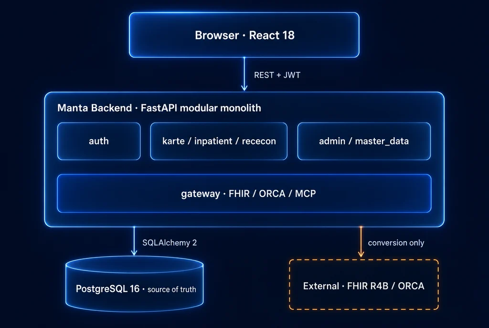

Technology
実験場だからこそ、
妥協しない。
F1 で試された技術が、時間をかけて市販車に降りてくる。Manta はカルテの実験場です。UI と AI では最先端を試し、医療データを預かる土台は、枯れて堅い技術で固める。その線引きと理由を、全部公開しています。
FastAPI + PostgreSQL 16 ・ React 18 + TypeScript ・ FHIR 対応

Stack
地味でも、枯れていて速い構成。
派手さより、医療データを扱う土台としての堅牢さを優先しました。型と非同期に強く、コードが読めること。それがこのスタックの選定基準です。
| 領域 | 採用技術 |
|---|---|
| フロントエンド | React 18 ・ TypeScript ・ Vite ・ Tailwind CSS v4 ・ Radix UI ・ Lucide。設計基盤は StyleSeed（Apple HIG skin / ADR 0003） |
| バックエンド | Python ・ FastAPI ・ SQLAlchemy 2 ・ Alembic ・ PostgreSQL 16。認証は JWT + Argon2（自前実装、本番でデフォルト鍵なら起動拒否） |
| 相互運用 | FHIR R4B / JP Core（fhir.resources）・ ORCA 日レセ API アダプタ ・ MCP（計画 / ADR 0007） |
| 設計の規律 | import-linter によるレイヤー機械強制 ・ ADR による意思決定記録 ・ Conventional Commits + DCO |
| 開発・実行 | Docker Compose ・ uv（Python）・ Biome（JS/TS lint / format）・ GitHub Actions CI |
なぜ、Rust ではなく Python か。
個人的に使いたかったのは Rust です。それでも最初は Python にしました。このプロジェクトは、多くの人が入ってくれないと成り立たないからです。コーディングエージェントの時代、臨床医もコードに参加できる。読みやすさは、そのまま入りやすさになります。だからいまは Python で速く、広く作ります。Rust への移行は、いつか作者自身かそのチームが引き受ける計画です。
なぜ、Web か。
Web だから、インストールは要らないし、どの端末でも同じ画面が動く。マルチプラットフォームは勝手についてきます。Java が夢見たマルチプラットフォームの世界を、今度は Web で実現します。フロントエンドが TypeScript なのは、もう選ぶ余地のない決定です。
Architecture
モノレポ + モジュラーモノリス
マイクロサービスにはしません。早すぎる物理分割は MVP を殺すからです。代わりに 8 モジュールの依存方向を「上から下への一方向」に制限し、逆流は CI が検出してビルドを落とします。境界を守るのは、レビュアーの善意ではなく機械です。
依存の向きは上 → 下のみ。下位が上位を import したら import-linter の契約違反として CI が落ちます（契約は backend/pyproject.toml）。必要が実際に来た時点で切り出せる状態を、いまのうちに保証しておくための設計です。

Gateway
FHIR は「データモデル」ではなく、
ゲートウェイ。
FHIR をそのまま DB スキーマにすると、日々の臨床ロジックが FHIR リソースの抽象度に引きずられて重くなります。だから真実の源はドメイン固有の ORM に置き、外部フォーマットは境界の内側に入れません。内側は素直なドメインモデルのまま、外に向けては標準規格で話します。
FHIR マッパー
ドメインの ORM と FHIR を、必要なときだけ相互変換します。対応しているのは FHIR の R4B 版と、日本向けプロファイルの JP Core です。現在 9 リソースの読み取りと 5 リソースの書き込みができます（要認証）。
ORCA アダプタ
日レセ API への変換と送受信、ORCA 固有エラーの正規化を、このアダプタの中に閉じ込めています。カルテやレセコンの本体は ORCA の仕様を知らずに済みます。現状は mock で、実送信はこれからです。
MCP サーバー
AI エージェントのための 3 つめの入口です。システム連携は FHIR、エージェント操作は MCP という役割分担で、カルテの全機能をエージェントからも使えるように開いていきます。
アダプタを足せば、他社レセコンや病院 HIS にも広げられます。ORCA の CLAIM 通信は 2026 年 3 月末で廃止されたため、連携は日レセ API 前提で設計しています（ADR 0004）。
Data Flow
カルテが正本、会計は派生
会計とレセプトは、カルテとオーダと病名から導かれる派生データです。医師の入力 UI を、請求の都合に侵食させないための順番です。
AI は候補を生成するだけで、確定しません。会計送信とレセプト請求の確定は、必ず人間が行います。
Master Data
保険診療の現実から
逃げない
カルテだけなら、もっと早く作れます。Manta があえて重い道を選んでいるのは、日本の保険診療の現実を正面から飲み込むと決めたからです。マスタの取り込みと改定対応は地味で、運用負荷も高い。でも、ここを避けたら現場で会計に流れず、価値が半分になる。
- MEDIS-DC 標準病名マスター（ICD10 対応）・診療報酬点数表
- 医薬品マスタ（YJ / HOT コード）・PMDA 電子添文と相互作用
- レセプトコメントマスタ・施設別ルール DSL
Monorepo
1 リポジトリに、全部あります
フロントもバックも設計文書も、同じ場所で版管理しています。docker compose up 一発で、DB と API と Web が立ち上がります。
manta/ ├─ frontend/ React 18 + Vite + Tailwind v4 + Radix ├─ backend/ FastAPI + SQLAlchemy 2 + Alembic │ └─ app/modules/ │ ├─ karte/ inpatient/ rececon/ │ ├─ gateway/ fhir / orca / (mcp) │ └─ auth/ master_data/ admin/ common/ ├─ docs/ 設計ドキュメント・ADR └─ compose.yaml db + api + web を一発起動